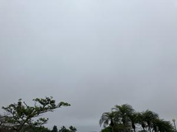

うるがいの話 ある日
最新: 漆かぶれのおまじない【うるがいの話 ある日】とは 一日だけのプログです
『うるがいの話』の最新一日だけのプログで、通信料が少なく経済的だ。カニの画像をクリックすると全ての日付が載る『うるがいの話』サイトを表示します
|
|
【うるがいの話】 うるがい(ｳﾙｶﾞｲ urugai)とは、『もずくがに』の名前でとても大きくなります。 |
|---|---|
|
|
【カミマヤーの話】 猫のことを方言でマヤーといいます。カミマヤー（kamimayaa）とは、神の猫のことです。 |
|
【たながぁの音楽】 たながぁ（ﾀﾅｶﾞｰ tanagaa）とは手長えびのことで、何種類かあり大きいのは車 エビぐらいになります。 |

|
【ぶながぁの話】 ぶながぁ(ﾌﾞﾅｶﾞｰ bunagaa)とは、赤い髪の毛、赤い身体、そして身長は１ｍ２０ｃｍ ぐらい、川の蟹を食べているの目撃された。場所は沖縄県国頭郡大宜味村のと ある村僕の隣近所に住んでいる爺さんから、聞いた話です。 |
|
|
【ギーマの話】 ギーマ(giima)とは、山原の里山に咲くスズランに似た、 花を付けます。実は食べられます、 気が付くと口の周りが紫になっています。 |
2025年03月27日 (木）漆かぶれのおまじない
15:53

中学生の頃、山へ行ってハジキ（ハゼノ木：漆の木）から、重度の
「漆かぶれ」にかかり、１回目は同じ村のオバァ、２回目は名護の
知人のオジーに、まじないでカブレを直してもらった経験がありま
す。おまじないは、スゴイ効果でおまじないをしてもらって、直ぐ
に痒みがひきました。
還暦近くの歳になって、法事のとき母親の従妹の小母さんにカブレ
を直しもらったことがあるけど、知っていますかと尋ねると『まじ
ない』でしょうね。と答えたが、もうまじないをできる人は、いな
いサーと。
図書館にそれらしき、『まじない』を探しました。
沖縄の魔除けとまじないフーフダ(符札)の研究南島文化叢書18図書
山里 純一∥著
ハジマキ・タンガサ・シブカサなどを治すまじないが載ってありま
した。その中の、タンガサ（膿疱疹：皮膚が部分的に膨れ、中に膿
がたまった状態）だと思う。
３編が、載っていた。（暇だったらクリック）
（イ）https://urugai04.bitbucket.io/link_mayaa/20250327_1Jyumon.html
（ロ）https://urugai04.bitbucket.io/link_mayaa/20250327_2Jyumon.html
（隣の翁から聞いた）https://urugai04.bitbucket.io/link_mayaa/20250327_3Jyumon.html
本には、このまじないを行う前に必ず『タバコの煙を吹きかけると
いう』。とあるが、私も煙を吹きかけられた。また、『ハジ木に石
を下げると治る』とあるが、これもやりました。これは簡単にでき
るのでよく知られていた。
ほとんど山で過ごす高校生になると、「漆かぶれ」に免疫ができた
のだろうか、ハジキを触ってもカブレになることはなかった。